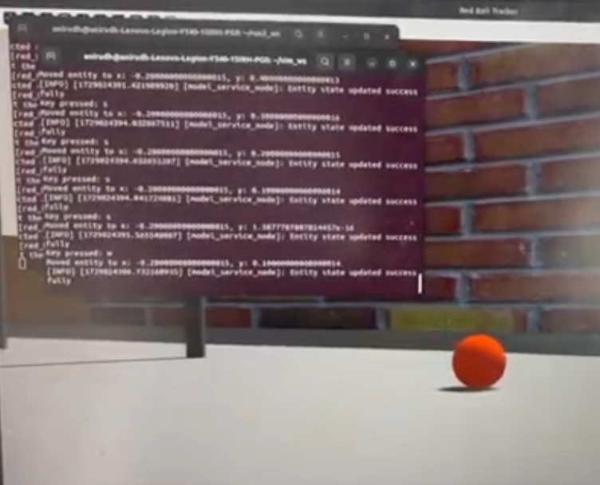

Turtlebot4-Perception

Project Overview
Developed a ROS 2-based perception and control system that enables a TurtleBot4 robot to autonomously detect, track, and follow a red ball using live camera input. The system was built and tested in a Gazebo simulation environment and is designed to be directly extensible to real-world deployment
ROS2 Humble
Python
Gazebo
cv_bridge
sensor_msgs
OpenCV
PID Control
geometry_msgs
Technical Implementation
ROS 2 Pipeline Design:
- Created modular ROS 2 nodes (publishers and subscribers) for camera streaming, image processing, and motion control
Computer Vision (OpenCV):
- Applied color-based segmentation in HSV space to isolate red objects
- Used contour detection to compute bounding boxes and extract object position and size for tracking logic
Control System:
- Designed a PID controller to compute linear and angular velocity commands based on ball alignment and distance
- Ensured smooth, real-time control to enable behavior like approach, avoidance, and fallback search when the ball is lost
Simulation Testing (Gazebo):
- Set up and evaluated robot behavior in the Gazebo simulator, simulating realistic sensor input and environmental interaction
Results
- Achieved real-time tracking of a red ball using simulated camera feed
- Accurate positional data published via ROS topics, visualized using RViz and custom debug overlays
- Demonstrated a complete closed-loop system from perception to control
- Designed the system to be modular and extensible, allowing seamless migration to physical TurtleBot4 hardware
- Validated behaviors such as dynamic alignment, velocity scaling, and robust fallback modes for when the ball is temporarily lost